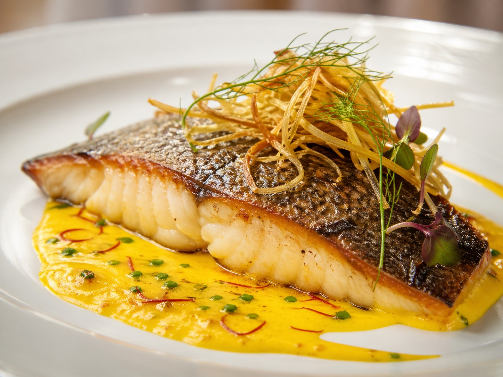
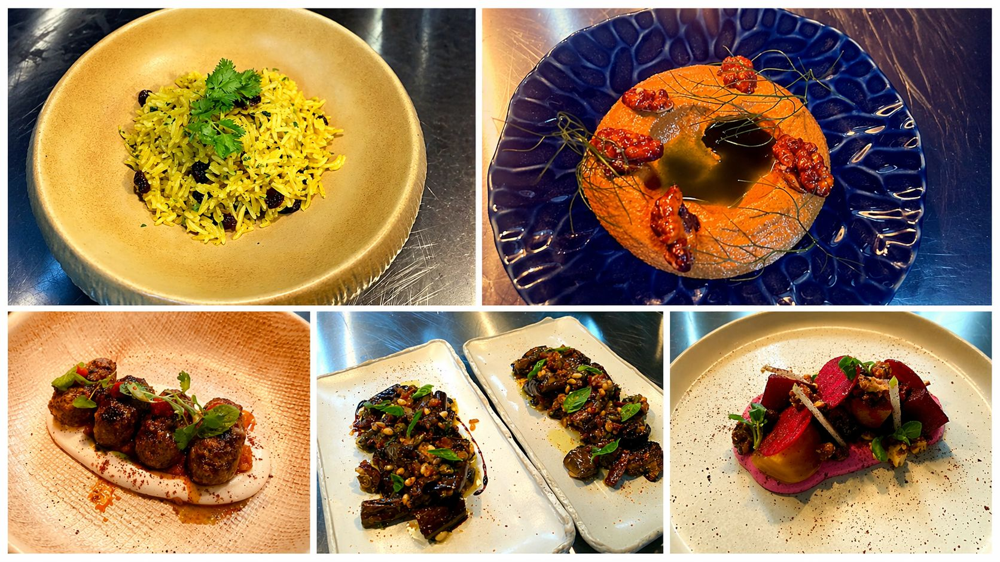
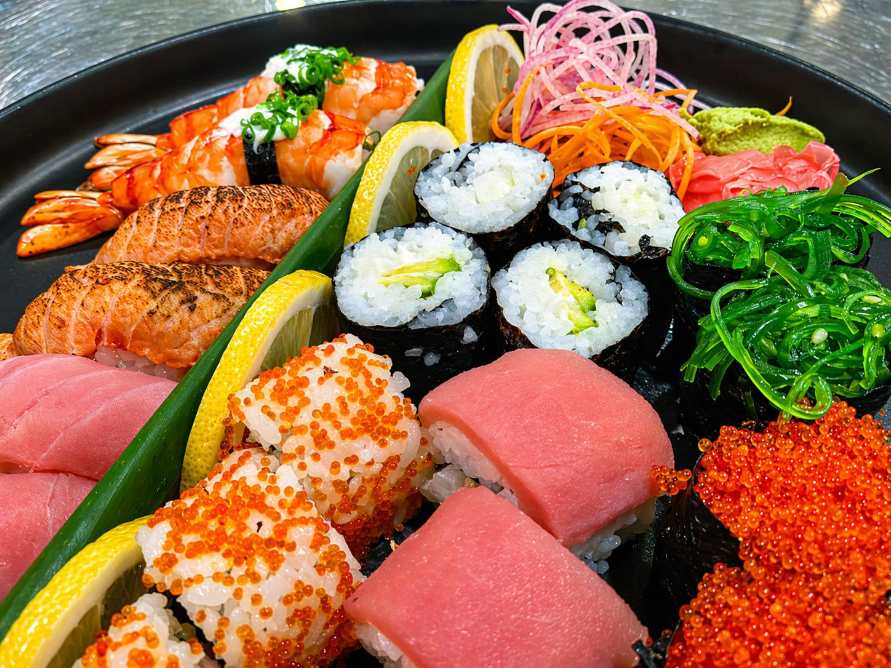
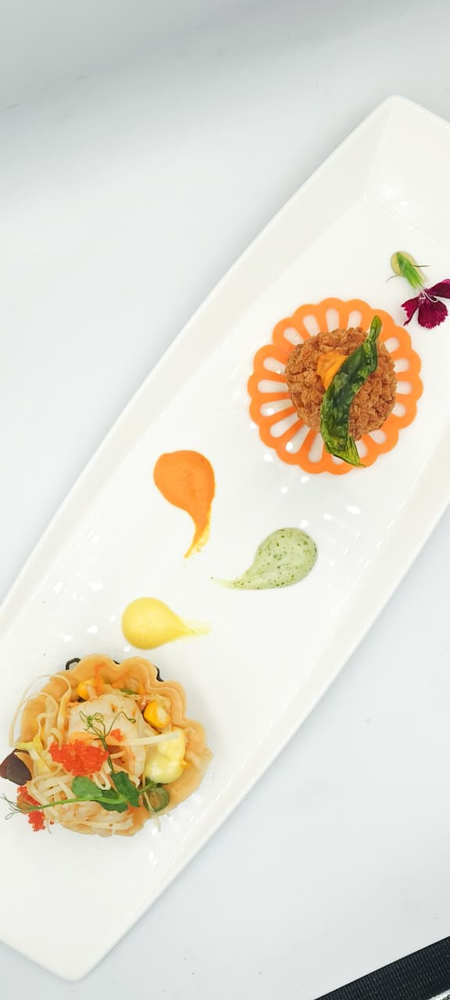

The Menu
Signature Dishes
A curated selection of dishes that define Chef Marco's culinary identity — fewer ingredients, higher quality, perfect technique.
"Every dish I create is a reduction — of complexity, of noise, of everything that doesn't need to be there. What remains is the truth of the ingredient."

Pan-Seared Wild Sea Bass
Crispy skin, saffron-fennel purée, sea herb oil, reduced bouillabaisse jus. A dish of restraint — the sea speaks for itself.
European
Mediterranean Medley
Saffron rice, roasted pepper foam, spiced kofta, braised aubergine with pine nuts, and beet salad. A celebration of the Mediterranean table.
Mediterranean
Japanese Sushi Selection
Torched salmon, tiger prawn nigiri, bluefin tuna, tobiko rolls, wakame, ikura — a curated platter built on the finest market catch.
Japanese
Nonya Pie Teh & Prawn Ball
Traditional Peranakan street-food elevated for grand-scale service — delicate pastry cups filled with braised turnip, topped with prawn balls. Executed for 1,000 guests without compromise.
PeranakanRoasted Duck Breast
Lacquered skin, spiced red cabbage, Schwarzwälder cherry reduction, potato roulade. Rooted in German culinary tradition.
German HeritageValrhona Chocolate Fondant
Dark chocolate at 70%, warm molten centre, Madagascar vanilla ice cream, salted caramel tuile. Simple, perfect, unforgettable.
Patisserie